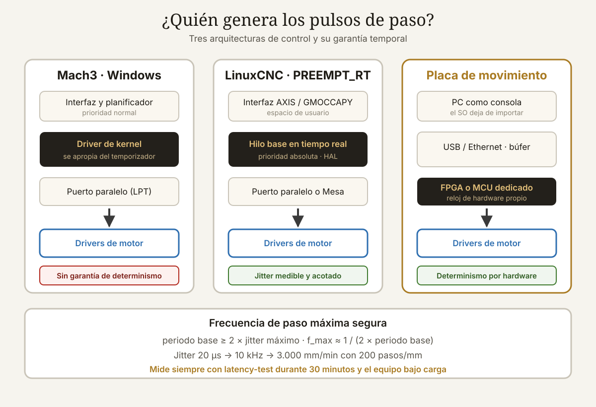

Qué cubre esta guía
- El problema real: generar pulsos con precisión
- Mach3: el veterano de Windows
- LinuxCNC: tiempo real de verdad
- Latencia y jitter: cómo medirlo antes de comprometerte
- Placas de movimiento externas: la solución moderna
- Comparativa punto por punto
- Las alternativas que también deberías considerar
- Cómo decidir según tu máquina
- Seguridad: lo que ningún software resuelve solo
- Conclusión
- Preguntas frecuentes
El problema real: generar pulsos con precisión
Antes de comparar dos programas conviene entender qué hace exactamente un controlador CNC. Su trabajo no es dibujar trayectorias bonitas en pantalla: es generar trenes de pulsos eléctricos con una precisión temporal de microsegundos.
Cada motor paso a paso de tu máquina recibe dos señales: STEP (un pulso = un paso) y DIR (nivel alto o bajo = sentido de giro). Para mover el eje X a 2.000 mm/min en una máquina con 200 pasos/mm, el controlador debe emitir:
2.000 mm/min ÷ 60 = 33,3 mm/s
33,3 mm/s × 200 pasos/mm = 6.666 pulsos por segundo, solo en XCon tres ejes moviéndose en interpolación coordinada, hablamos de 20.000 pulsos por segundo que deben mantener una relación temporal exacta entre sí. Si un pulso de X llega 200 microsegundos tarde mientras Y sigue su ritmo, la herramienta se desvía de la trayectoria. Si el retraso es mayor, el motor pierde pasos: la máquina cree estar en una posición y la herramienta está en otra, y todo lo que venga después de ese punto está mal cortado.
Aquí es donde Mach3 y LinuxCNC toman caminos radicalmente distintos.
Mach3: el veterano de Windows
Mach3, desarrollado por ArtSoft (Newfangled Solutions), apareció a comienzos de los 2000 y se convirtió en el estándar de facto del CNC casero durante más de una década. Corre sobre Windows y su enfoque original fue ingenioso: instalar un controlador de kernel que se apropia del temporizador del sistema para generar pulsos por el puerto paralelo a hasta 100 kHz.
Fortalezas
- Curva de aprendizaje suave. Se instala como cualquier programa de Windows y su configuración se hace con diálogos gráficos claros.
- Ecosistema enorme. Veinte años de foros, videos, plugins, pantallas personalizadas y macros en VBScript. Casi cualquier problema que tengas ya lo resolvió alguien.
- Compatibilidad comercial. Muchas máquinas chinas de bajo coste (routers 6040, 3040, grabadoras) vienen con placas de ruptura diseñadas específicamente para Mach3.
- Personalización de la interfaz mediante el editor de pantallas, con macros accesibles para quien no programa en profundidad.
Limitaciones
- Windows no es determinista. Aunque el driver de Mach3 tenga alta prioridad, otros controladores del sistema pueden bloquear las interrupciones el tiempo suficiente para provocar jitter. Antivirus, tarjetas de red y gestión de energía son causas clásicas.
- Requiere puerto paralelo físico para el modo nativo. Los adaptadores USB a paralelo no funcionan: no ofrecen el acceso directo a registros que el driver necesita. Y los PC con puerto paralelo real son cada vez más escasos.
- Soporte limitado en Windows moderno. El driver de puerto paralelo está diseñado para sistemas de 32 bits; en Windows de 64 bits hace falta usar una placa de movimiento externa.
- Desarrollo detenido. Mach3 ya no recibe nuevas funciones; ArtSoft dirige su desarrollo a Mach4.
- Licencia de pago: alrededor de 175 dólares por licencia, con versión de demostración limitada a 500 líneas de G-code.
LinuxCNC: tiempo real de verdad
LinuxCNC (originalmente EMC, Enhanced Machine Controller) nació en el NIST, el instituto nacional de estándares de Estados Unidos, como plataforma abierta de control de máquinas herramienta. Hoy es un proyecto de software libre bajo licencia GPL, y su arquitectura resuelve el problema del determinismo en la raíz: en lugar de pelear con el sistema operativo, usa un kernel con parches de tiempo real (PREEMPT_RT o RTAI).
En ese kernel, la tarea que genera los pulsos tiene prioridad absoluta sobre todo lo demás. Ni la interfaz gráfica, ni la red, ni el disco pueden interrumpirla. El resultado es un jitter medido en pocos microsegundos, de forma verificable y repetible.
Fortalezas
- Determinismo real y medible. LinuxCNC incluye una herramienta de prueba de latencia que reporta el jitter máximo de tu hardware antes de que conectes un solo motor.
- Arquitectura HAL. La Hardware Abstraction Layer es un sistema de bloques que se interconectan mediante señales. Puedes construir prácticamente cualquier lógica de control —desde una bomba de refrigerante hasta un cambiador automático de herramienta— conectando componentes sin recompilar nada.
- Cinemáticas no cartesianas nativas. Soporta máquinas delta, robots SCARA, hexápodos, tornos con eje C y configuraciones de 5 ejes reales. Mach3 es esencialmente cartesiano.
- Roscado rígido y sincronización de husillo con encoder, funcionando de forma robusta.
- Gratuito y libre, sin límite de líneas, sin licencia por máquina, con código auditable.
- Desarrollo activo con lanzamientos periódicos y soporte para hardware moderno.
Limitaciones
- Curva de aprendizaje pronunciada. Aunque el asistente StepConf resuelve las configuraciones sencillas, cualquier cosa a medida exige entender HAL y editar archivos de configuración.
- Sensibilidad al hardware. No todos los PC alcanzan buena latencia; hay placas base con SMI (interrupciones de gestión del sistema) que arruinan el determinismo y no siempre se pueden desactivar.
- Sistema operativo dedicado. Necesitas una máquina exclusiva con Linux. No es práctico compartirla con tu PC de diseño.
- Menos plug-and-play con las placas de ruptura chinas genéricas, que están pensadas para Mach3.
Latencia y jitter: cómo medirlo antes de comprometerte
La latencia es el retraso entre el momento en que una tarea debía ejecutarse y el momento en que realmente se ejecutó. El jitter es la variación de esa latencia. Para un controlador CNC, el jitter máximo es la cifra que manda, porque determina la frecuencia de paso segura.
LinuxCNC trae una utilidad de prueba que se ejecuta antes de conectar nada:
# Ejecutar durante al menos 30 minutos, con carga de trabajo:
# navegador abierto, copiando archivos, moviendo ventanas
latency-test
# Interpretación del jitter máximo del hilo base:
# < 10.000 ns → excelente, puerto paralelo a alta frecuencia
# < 25.000 ns → bueno, funciona bien en la mayoría de máquinas
# < 50.000 ns → aceptable con frecuencias de paso moderadas
# > 100.000 ns → usa una placa de movimiento externaEl jitter limita directamente la frecuencia máxima de paso utilizable. Una aproximación práctica: el periodo del hilo base debe ser al menos el doble del jitter máximo, y cada pulso necesita dos ciclos (alto y bajo).
Con jitter de 20.000 ns (20 µs):
periodo base seguro ≈ 50.000 ns
frecuencia de paso máxima ≈ 1 / (2 × 50 µs) = 10 kHz
Velocidad máxima en un eje de 200 pasos/mm:
10.000 pulsos/s ÷ 200 pasos/mm = 50 mm/s = 3.000 mm/minEse número decide si tu PC sirve. Si tu máquina necesita avances rápidos de 5.000 mm/min y tu jitter solo permite 3.000, tienes tres opciones: mejorar el hardware, reducir la microstepping (menos pasos/mm) o pasar a una placa de movimiento externa.
Placas de movimiento externas: la solución moderna
Existe una tercera vía que resuelve el problema de raíz: sacar la generación de pulsos del PC. Una placa de movimiento externa incorpora su propio microcontrolador o FPGA que recibe el búfer de trayectoria por USB o Ethernet y genera los pulsos con su propio reloj de hardware. El PC pasa a ser una simple consola, y el determinismo del sistema operativo deja de importar.
| Placa | Interfaz | Compatible con | Frecuencia de paso | Rango de precio |
|---|---|---|---|---|
| Ethernet SmoothStepper | Ethernet | Mach3, Mach4 | ~4 MHz | Medio-alto |
| UC100 / UC300ETH | USB / Ethernet | Mach3, Mach4, UCCNC | ~100 kHz – 1 MHz | Medio |
| Mesa 7i76E / 7i92 | Ethernet | LinuxCNC | Muy alta (FPGA) | Medio |
| Mesa 5i25 + 7i76 | PCI Express | LinuxCNC | Muy alta (FPGA) | Medio |
| Placa BOB paralelo genérica | Puerto paralelo | Mach3, LinuxCNC | Limitada por el PC | Muy bajo |
Con una placa Mesa, LinuxCNC deja de depender del jitter del PC para la generación de pulsos: la FPGA los produce y el software solo actualiza objetivos de posición a intervalos de milisegundos. Es la configuración que usan la mayoría de las máquinas serias con LinuxCNC, y permite correr el sistema en hardware moderno o incluso en una Raspberry Pi.
Del lado de Mach3, la Ethernet SmoothStepper cumple la misma función y además elimina el requisito del puerto paralelo, permitiendo usar Windows de 64 bits. El precio de la placa suele acercarse al de la licencia de Mach3, así que conviene sumar ambos costes al comparar.
Comparativa punto por punto
| Criterio | Mach3 | LinuxCNC |
|---|---|---|
| Coste de licencia | ~175 USD | Gratuito (GPL) |
| Sistema operativo | Windows (32 bits para puerto paralelo) | Debian con kernel de tiempo real |
| Determinismo | Dependiente del sistema; sin garantía | Real, medible y verificable |
| Instalación | Muy sencilla | Media: imagen ISO lista, pero requiere configurar |
| Configuración inicial | Asistente gráfico completo | StepConf o PnCConf; HAL para lo avanzado |
| Cinemáticas soportadas | Cartesiana (3–6 ejes) | Cartesiana, delta, SCARA, hexápodo, 5 ejes reales |
| Roscado rígido | Limitado | Sí, con encoder de husillo |
| Personalización lógica | Macros VBScript, Brains | HAL, componentes en C o Python, ClassicLadder |
| Interfaz gráfica | Pantallas personalizables | AXIS, Touchy, GMOCCAPY, QtDragon |
| Documentación oficial | Manual clásico, algo desactualizado | Extensa y mantenida al día |
| Comunidad | Muy grande, especialmente hispanohablante | Grande y muy técnica |
| Estado del desarrollo | Detenido (sucedido por Mach4) | Activo |
| Hardware chino genérico | Excelente compatibilidad | Compatible, con más configuración |
| Comportamiento con fallo de PC | Puede perder pasos silenciosamente | Detiene la máquina ante error de tiempo real |
Un detalle de esa tabla merece atención especial: qué hace cada sistema cuando algo va mal. Si LinuxCNC detecta que no pudo cumplir un plazo de tiempo real, aborta y avisa. Mach3 sencillamente emite el pulso tarde, y la máquina sigue cortando con un error de posición que solo descubrirás al medir la pieza. Para trabajos largos en material caro, esa diferencia de filosofía vale más que cualquier función de la lista.
Las alternativas que también deberías considerar
El debate Mach3 contra LinuxCNC arrastra veinte años de historia, pero el panorama actual tiene más opciones:
- Mach4 — El sucesor oficial de Mach3, con una arquitectura reescrita que separa el núcleo de movimiento de la interfaz y usa scripting en Lua. Requiere obligatoriamente una placa de movimiento externa. Es más estable que Mach3, pero heredó un ecosistema de plugins más pequeño.
- UCCNC — Software del fabricante de las placas UC100/UC300. Ligero, estable y con licencia económica, muy bien valorado por quienes migraron desde Mach3. Solo funciona con hardware de la misma marca.
- GRBL — Firmware libre que corre directamente en un Arduino o en microcontroladores ARM. Es la opción por defecto en routers pequeños, grabadoras láser y máquinas de tres ejes. No maneja cinemáticas complejas ni cambio de herramienta sofisticado, pero para una CNC de escritorio es difícil de superar en simplicidad y fiabilidad. Si tu proyecto es de esa escala, la calibración de potencia de láser diodo muestra cómo se integra con este tipo de control.
- Masso G3 / Centroid Acorn — Controladores independientes con pantalla propia, sin PC. Más caros, pero son la opción "electrodoméstico": se instalan y funcionan.
- FluidNC — Evolución de GRBL sobre ESP32, con configuración por archivos YAML, WiFi y soporte de más ejes. Interesante punto medio entre GRBL y los sistemas grandes.
Cómo decidir según tu máquina
| Tu situación | Recomendación | Por qué |
|---|---|---|
| Router 3040/6040 chino recién comprado | Mach3 o UCCNC | La placa incluida ya está diseñada para ello |
| CNC de escritorio de 3 ejes, hecha en casa | GRBL o FluidNC | Coste mínimo, configuración en minutos |
| Conversión de fresadora o torno de metal | LinuxCNC + Mesa | Roscado rígido, control de husillo, fiabilidad |
| Máquina de 4 o 5 ejes | LinuxCNC | Cinemáticas avanzadas nativas |
| Robot, delta o cinemática no cartesiana | LinuxCNC | Único de los dos que las soporta |
| Uso productivo con operarios | Masso, Centroid o Mach4 | Interfaz cerrada, menos que configurar mal |
| Ya tienes Mach3 funcionando bien | Quédate con Mach3 | Migrar cuesta tiempo; si funciona, funciona |
| Quieres aprender control de máquinas a fondo | LinuxCNC | HAL enseña cómo funciona todo por dentro |
Un criterio adicional que rara vez se menciona: tu tiempo tiene precio. Si vas a usar la máquina para producir y no para aprender, la configuración que arranca en dos horas puede valer más que la que es técnicamente superior pero exige un fin de semana de lectura. Si en cambio la máquina es también tu proyecto de aprendizaje, LinuxCNC te enseñará muchísimo más sobre control de movimiento, y ese conocimiento se traslada a la automatización industrial y a la programación de PLC.
Seguridad: lo que ningún software resuelve solo
Da igual qué controlador elijas: una CNC es una máquina con un husillo que gira a miles de revoluciones por minuto y ejes capaces de aplastar una mano. La seguridad se implementa en hardware, porque el software puede colgarse.
- Parada de emergencia cableada: un pulsador tipo hongo con enclavamiento que corte la alimentación de los drivers y del husillo físicamente, no por software. El controlador debe además recibir esa señal como entrada para detener el programa. El artículo sobre sistemas de parada de emergencia detalla el criterio de diseño.
- Finales de carrera en ambos extremos de cada eje, cableados en serie y en modo normalmente cerrado: si un cable se corta, el circuito se abre y la máquina se detiene. Nunca uses normalmente abierto para seguridad.
- Límites de software (soft limits) configurados además de los físicos, para que el controlador rechace movimientos fuera del volumen de trabajo antes de intentarlos.
- Referenciado (homing) obligatorio al encender, para que el sistema de coordenadas sea el mismo en cada sesión.
- Cableado apantallado y con tierra para las señales de paso y dirección. El ruido eléctrico de un variador de frecuencia genera pulsos fantasma, y un pulso fantasma es un paso perdido. Separa físicamente los cables de potencia de los de señal.
Conclusión
La pregunta "¿Mach3 o LinuxCNC?" está mal planteada si se responde solo por precio. Ambos generan pulsos de paso y dirección; la diferencia está en qué garantía temporal ofrecen y cuánto control te dan a cambio de cuánta complejidad.
Mach3 sigue siendo una elección razonable si tienes una máquina comercial con placa compatible, un PC con puerto paralelo y quieres estar cortando esta misma tarde. Su ecosistema es insuperable y su curva de aprendizaje es la más suave del sector. Pero es software detenido, atado a hardware obsolescente y sin determinismo garantizado.
LinuxCNC es la opción técnicamente superior en casi todos los ejes de comparación: tiempo real real, cinemáticas avanzadas, HAL, roscado rígido, desarrollo activo y coste cero. El precio lo pagas en horas de aprendizaje y en la necesidad de un PC dedicado.
Y hay una tercera respuesta que a menudo es la correcta: si tu máquina es una CNC de escritorio de tres ejes, ninguno de los dos. GRBL o FluidNC en un microcontrolador resuelven ese caso con menos hardware, menos configuración y más fiabilidad. Elige el controlador que corresponde a la máquina que realmente tienes, no a la que te gustaría tener.
Preguntas frecuentes
¿Puedo usar Mach3 con un adaptador USB a puerto paralelo?
No. Mach3 en modo nativo accede directamente a los registros de hardware del puerto paralelo, y un adaptador USB no expone ese acceso: presenta un dispositivo de impresora virtual. La única forma de usar Mach3 sin puerto paralelo físico es mediante una placa de movimiento externa como la Ethernet SmoothStepper o una UC100, que se conecta por USB o Ethernet y genera los pulsos con su propio hardware.
¿LinuxCNC funciona en una Raspberry Pi?
Sí, con matices importantes. Existen imágenes oficiales de LinuxCNC para Raspberry Pi 4 y 5 con kernel de tiempo real. Sin embargo, la generación de pulsos por GPIO desde la propia Pi tiene un jitter demasiado alto para máquinas exigentes. La configuración recomendada es usar la Pi como interfaz junto a una placa de movimiento externa (Mesa por Ethernet o SPI), de modo que el hardware dedicado genere los pulsos y la Pi solo ejecute la interfaz y el planificador de trayectoria.
¿Cuánto jitter es aceptable para una CNC casera?
Menos de 25.000 nanosegundos (25 µs) de jitter máximo es un buen resultado y permite trabajar cómodamente con puerto paralelo en la mayoría de máquinas caseras. Entre 25.000 y 50.000 ns todavía es utilizable si reduces la frecuencia de paso, bajando el microstepping o los pasos por milímetro. Por encima de 100.000 ns el PC no sirve para generación directa de pulsos y debes recurrir a una placa de movimiento externa. Mide siempre durante al menos 30 minutos y con el equipo bajo carga real.
¿Es difícil migrar de Mach3 a LinuxCNC?
El G-code se transfiere casi sin cambios, porque ambos siguen el estándar RS-274. Lo que hay que rehacer es toda la configuración de la máquina: pasos por milímetro, aceleraciones, asignación de pines, polaridad de los finales de carrera y lógica de husillo. El asistente StepConf de LinuxCNC cubre las configuraciones de tres ejes con puerto paralelo en aproximadamente una hora. Las macros en VBScript de Mach3 no son portables y deben reescribirse como componentes HAL, subrutinas en G-code o scripts en Python.
¿Mach4 vale la pena frente a Mach3?
Mach4 tiene una arquitectura mucho más sólida: separa el núcleo de movimiento de la interfaz, es más estable en trabajos largos y usa Lua para scripting. Su desventaja es que exige obligatoriamente una placa de movimiento externa y que su ecosistema de plugins y pantallas es menor que el de Mach3. Si estás empezando desde cero y quieres quedarte en el mundo Windows, Mach4 o UCCNC son mejores apuestas de futuro que Mach3. Si ya tienes Mach3 configurado y funcionando bien, migrar rara vez se justifica.
¿Qué PC necesito para LinuxCNC?
Con placa de movimiento externa, cualquier equipo moderno razonable sirve, incluida una Raspberry Pi 4 o 5. Para generación de pulsos por puerto paralelo, un PC de escritorio antiguo (Core 2 Duo o similar) con gráficos integrados, sin WiFi y con las opciones de ahorro de energía desactivadas en la BIOS suele dar mejor latencia que un portátil moderno. La razón es que los portátiles usan intensivamente interrupciones SMI para gestión térmica y de energía, y esas interrupciones son invisibles para el sistema operativo pero destruyen el determinismo.
Este artículo es contenido editorial independiente: no contiene ubicaciones patrocinadas ni enlaces de afiliado. Si en futuras actualizaciones se agregan enlaces a proveedores de componentes, serán identificados explícitamente. El código y las conexiones son referenciales y deben adaptarse y probarse con tu propio hardware. Si detectas un error en esta guía, por favor avísanos.
Sigue aprendiendo
Si vas a montar la parte eléctrica de la máquina, revisa la programación de PLC para robótica para la lógica auxiliar y los sistemas de parada de emergencia para el circuito de seguridad.
Fuentes primarias y lecturas recomendadas
Documentación oficial de ambos proyectos y referencias de hardware de control de movimiento. Las cifras de latencia dependen por completo del equipo concreto y deben medirse en tu propia máquina.
- LinuxCNC — Documentación oficial y manual de integración
- LinuxCNC — Prueba de latencia y ajuste del sistema
- LinuxCNC — Manual de la capa de abstracción de hardware (HAL)
- Newfangled Solutions — Sitio oficial de Mach3 y Mach4
- Mesa Electronics — Tarjetas de control de movimiento para LinuxCNC
- GRBL — Repositorio y documentación del firmware
- NIST — Enhanced Machine Controller, origen del proyecto
Enlaces revisados: 15 de agosto de 2026.